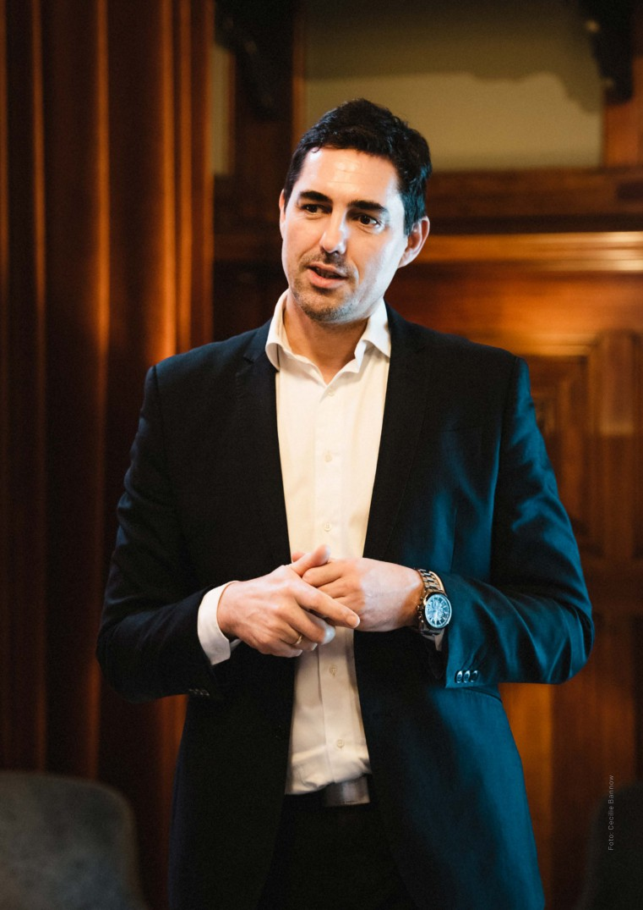
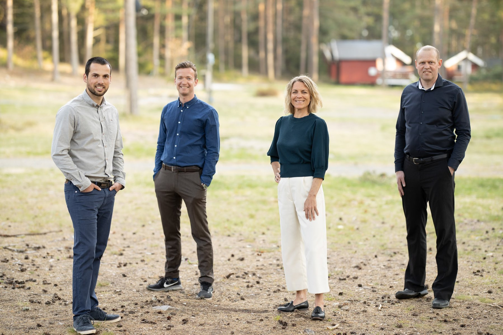
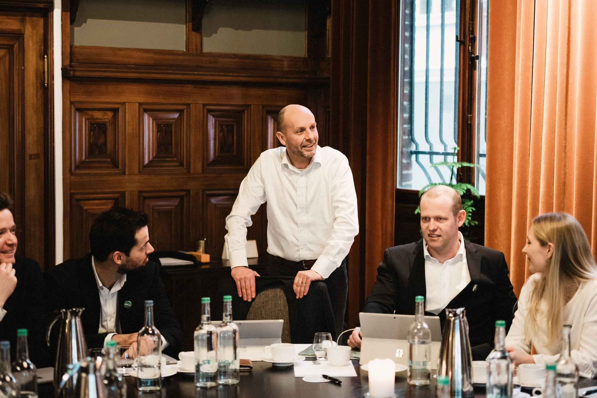

Etter fem år er Greenstat unikt posisjonert for grønn vekst.
Vegard Frihammer
Daglig leder
I januar 2020 fylte Greenstat fem år. Dermed er første fase av vår langsiktige satsing unnagjort. En solid plattform er etablert, og vi er nå klar for hurtig oppskalering. Slik jeg ser det er Greenstat veldig godt posisjonert, og vi ser stadig større muligheter i et hurtig- voksende grønt marked, både nasjonalt og internasjonalt.
Gjennom 2019 har Greenstat tydeliggjort strukturen med et overordnet toppselskap som etablerer områdespesifikke kommer- sielle enheter, og som deltar med strate- giske investeringer i andre selskaper. Greenstat Hydrogen, Greenstat Energy og Greensight ivaretar satsinger innen hydrogen, lokal energi og energianalyse. Selskapene er selvstendige enheter med egen ledelse, strategi og forretningsplan.
Greensight har etter tre års drift levert sitt første år med positive tall. Og med et stadig voksende marked for energi- analyser, ligger alt til rette for videre vekst, både omsetningsmessig og resultat- messig. Men viktigst av alt er at Greensight, med sin kompetanse, bidrar med kunnskap som kutter utslipp.
Innen hydrogen har Greenstat lenge vært en av de mest toneangivende aktørene i Norge. Sammen med våre partnere står vi nå foran et markedsgjennombrudd hvor store prosjekter forventes realisert de neste 2-3 årene. Det er i hovedsak gjennom eierposter i Glomfjord Hydrogen, som etablerer grønn hydrogenproduksjon i Glomfjord Industri- park – og Green H2 Norway hvor man skal bygge infrastruktur for Hyundai sine nye hydrogenlastebiler – at prosjektene vil komme først. Men også innen oppdretts- næringen, industri og andre områder er interessen for hydrogen stadig voksende. Alt ligger dermed til rette for at Greenstat innen kort tid er med og eier anlegg som produserer grønn hydrogen.

Foto: Cecilie Bannow
Et høydepunkt i 2019 var etableringen av Greenstat Energys kontor i Agder, hvor Torstein Thorsen Ekern ble ansatt som daglig leder. Han kom samtidig inn som nest største eier i Greenstat på toppnivå. En slik modell hvor man etablerer selskaper under en felles paraply, er en effektiv måte å samle ressurser i et kompe- tent miljø hvor alle jobber mot et større, overordnet mål. Det gir også store synergier på tvers, noe vi allerede ser nytte av gjennom sterk deltakelse i hydrogenprosjekter i Agder, og bruk av lokal energikompetanse i prosjekter i over hele landet.
Greenstat har gjennom fem år beveget seg med stødige skritt i riktig retning, og selskapet er sterkere enn noen gang. Vi har et fantastisk team med kompetente ansatte som deler samme visjon om å gjøre verden til et bedre sted. Vi har en solid og godt forankret strategi som har stått seg godt gjennom fem år. Vi er en attraktiv forretningspartner innen våre områder, og vi har strategisk eierskap i flere av de mest spennende selskapene i Norge. Vi har egne konsepter som utvikles og som vil bli satse på i tiden framover. Vi har en organisasjon og IT systemer som er tilpasset hurtig og skalerbar vekst. Vi har et kompetent styre som blir stadig mer profesjonelt, og ikke minst har vi nå over 500 aksjonærer og ambassadører som bidrar aktivt til å hjelpe selskapet opp og fram.
Og best av alt, vi har ingen gamle forretningsmodeller som tynger oss ned og gjør at vi må inngå kompromisser. I sum mener jeg at vi har bygget ett av Norges, og kanskje verdens, mest spennende selskaper. Et selskap som er i posisjon til å gripe de beste mulighetene i det grønne skiftet.
For meg som leder oppleves det som en «once in a lifetime»- mulighet å kunne lede et selskap som Greenstat i en tid hvor grønn energi er den åpenbart riktige veien å gå når fremtidens energisystem skal bygges. Det gjør at jeg har satt av nye fem år, minst, til å være med å bygge selskapet videre sammen med våre aksjonærer og samarbeidspartnere.
Et høydepunkt i 2019 var etableringen av Greenstat Energys kontor i Agder, hvor Torstein Thorsen Ekern ble ansatt som daglig leder. Han kom samtidig inn som nest største eier i Greenstat
på toppnivå. En slik modell hvor man etablerer selskaper under en felles paraply, er en effektiv måte å samle ressurser i et kompe- tent miljø hvor alle jobber mot et større, overordnet mål. Det gir også store synergier på tvers, noe vi allerede ser nytte av gjennom sterk deltakelse i hydrogenprosjekter i Agder, og bruk av lokal energikompetanse i prosjekter i over hele landet.
Greenstat har gjennom fem år beveget seg med stødige skritt i riktig retning, og selskapet er sterkere enn noen gang. Vi har et fantastisk team med kompetente ansatte som deler samme visjon om å gjøre verden til et bedre sted. Vi har en solid og godt forankret strategi som har stått seg godt gjennom fem år. Vi er en attraktiv forretningspartner innen våre områder, og vi har strategisk eierskap i flere av de mest spennende selskapene i Norge. Vi har egne konsepter som utvikles og som vil bli satse på i tiden framover. Vi har en organisasjon og IT systemer som er tilpasset hurtig og skalerbar vekst. Vi har et kompetent styre som blir stadig mer profesjonelt, og ikke minst har vi nå over 500 aksjonærer og ambassadører som bidrar aktivt til å hjelpe selskapet opp og fram.
Og best av alt, vi har ingen gamle forretningsmodeller som tynger oss ned og gjør at vi må inngå kompromisser. I sum mener jeg at vi har bygget ett av Norges, og kanskje verdens, mest spennende selskaper. Et selskap som er i posisjon til å gripe de beste mulighetene i det grønne skiftet.
For meg som leder oppleves det som en «once in a lifetime»- mulighet å kunne lede et selskap som Greenstat i en tid hvor grønn energi er den åpenbart riktige veien å gå når fremtidens energisystem skal bygges. Det gjør at jeg har satt av nye fem år, minst, til å være med å bygge selskapet videre sammen med våre aksjonærer og samarbeidspartnere.
Making green happen - now!
Greenstat Energy etableres i Arendal.
Torstein Thorsen Ekern
Leder, Greenstat Energy
Greenstat Energy ble etablert som et datter- selskap i 2018, men det var begrenset
aktivitet det første året. Fra august 2019 startet man opp for fullt med base i Arendal. Greenstat Energy har gått i gang med
3 personer og en satsing på lokal energi- produksjon fra vind- og solenergi. Vi ser også at lokal energiproduksjon kan ta del
i større verdikjeder og i flere av Greenstats andre forretningsområder, deriblant hydrogen.
Torstein Thorsen Ekern er daglig leder i selskapet, Gudmund Synnevåg Sydness
er prosjektleder vind og Charly Berthod er prosjektleder sol. Etter 5 måneders drift har Greenstat Energy kommet godt i gang med utvikling av egne prosjekter. Fra 1. mai 2020 ble også Karen Landmark en del av Green- stat Energy teamet som «Manager Busi- ness Development and Energy Systems».
Vind
Greenstat Energy har kommet i gang med prosjektutviklingen og har jobbet med 4-6 prosjektmuligheter i Agder, Rogaland og Vestland fylke i 2019. Alle prosjektene er lokalisert i områder som allerede er betydelig påvirket av menneskelig aktivitet. Vi kaller derfor satsingen vår i Greenstat
for #Industrivind. Prosjektene ligger i all hovedsak på en total installert effekt
på mellom 1-10 MW.
Fokuset i første omgang har vært å opprette dialog med grunneiere, kommuner og nett- eiere samt større industriaktører som er lokalisert i nærheten av prosjektområdene. Satsingen vår på Industrivind har blitt godt mottatt, og mange ser fordelene av å lokali- sere vindkraftanlegg i områder som allerede er helt eller delvis industrialisert.
Arbeidet med stadig flere prosjektmulig- heter har fortsatt videre inn i 2020. Vi
tar sikte på å offentliggjøre første de
av Greenstats prosjektportefølje innen #Industrivind i løpet av våren 2020.
Sol
Greenstat Energy kom fort i gang med installering av solanlegg på privathus.
Vi har brukt det Agder baserte selskapet Marna Energi AS som samarbeidspartner og underleverandør på installasjonene.

Fra venstre: Charly, Gudmund, Karen og Torstein.
Solanleggene som ble installert i løpet av 2019 ble levert til tilnærmet kostpris, med lave marginer for Greenstat for å bygge opp en verdikjede. Marginene økes nå gradvis fremover i løpet av 2020, men vi ser likevel at vi vil ligge under på pris og bedre på kvalitet enn våre konkurrenter. Installasjonene i løpet av 2019 ga oss i Greenstat Energy nyttig innkjøring og erfaring med plan- legging, prosjekteringer, innkjøp og gjennomføring av solenergiprosjekter. Arbeidet med solanlegg vil vi dermed kunne gjøre mer strømlinjeformet og optimalisert fremover.
Greenstat Energy installerte totalt 5 sol- anlegg i 2019 med en samlet årlig produk- sjon på 30 160 kWh. Greenstat Energy ser på sikt at solanlegg på næringsbygg vil være vårt hovedsatsingsområde, og vi har kommet godt i gang med dialog og sam- arbeid med mulige næringslivskunder.
I 2020 vil vi fortsette installeringen på privathus samtidig som vi går i gang med solanlegg på næringsbygg.
Konsulentarbeid gir løpende inntekter
Greenstat Energy har også utført betalt eksternt arbeid i 2019. Vi har driftsansvaret for Røyrmyra vindkraftverk i Hå kommune (2,4 MW), og vi har vært involvert i detalj- prosjektering og forberedelser frem mot byggestart av Nordisk Vindkrafts vindkraft- prosjekter i Norge. Dette arbeidet vil fort- sette videre i 2020.

Vi har vært involvert i mange prosjekter, både alene og i samarbeid med andre sel- skaper, såvel utenfor som innenfor Green- stat-familien. Selskapet har opparbeidet seg en sterk posisjon i det norske hydrogen- miljøet og merker også økt interesse
fra internasjonale aktører.
Målsettingen til Greenstat Hydrogen er å eie infrastruktur for å produsere og selge grønt hydrogen. Hydrogenmarkedet er fremdeles ganske umodent, og det tar naturligvis tid
å etablere både produksjon og marked. En stor del av arbeidet vårt i 2019 bestod av betalt studiearbeid i oppdrag for eksterne aktører. Hvor vi har bidratt sterkt til å definere tekniske løsninger og forretningspotensialet til diverse spesifikke prosjekter – blant annet for flere store rederier og industriaktører. Denne typen studiearbeid gir oss et godt nettverk, mulighet til å tilegne oss ytterligere kompetanse, og har gitt oss mulighet
til å posisjonere oss i fremtidige realiserings- prosjekter.
Visjon og bærekraft
Mot nullutslipps-samfunnet
Gjennom sin visjon Making Green Happen er Greenstat en pådriver for overgangen til
et utslippsfritt samfunn. Basert på kjent teknologi kan alle områder av samfunnet slik vi kjenner det, kutte utslipp og bruke bærekraftige løsninger.
Havbruksnæring [ 1 ]
Arbeidsbåter og andre fartøy tilknyttet hav- bruksnæringen vil i framtiden gå på batteri og/eller hydrogen. Oksygen og varme fra hydrogenproduksjon kan utnyttes i anleggene.
Grønne energistasjoner [ 2 ]
Framtidens grønne energistasjoner vil tilby både hurtiglading og hydrogenfylling. Digitale løsninger, eks. skiltgjenkjenning og store skjermer, vil bidra til en sømløs lade-/fylleopplevelse.
Industrivind [ 3 ]
Vindkraft bør bygges i områder som allerede er berørt av menneskelig aktivitet. Da kan man oppnå betydelig kraftproduksjon uten store naturinngrep.
Maritim - nærskipsfart [ 4 ]
Ferjer er allerede i ferd med å bli elektriske, og snart kommer også den første hydrogen- ferjen. Hurtigbåter, fritidsbåter og andre mindre fartøy vil alle snart gå på batteri og/eller hydrogen. Det vil bidra til reduserte utslipp og økt komfort på sjøen.
Maritim - store skip [ 5 ]
Cruise skip, offshore-fartøy, lastefartøy og andre typer skip vil i framtiden gå på hydrogen og/eller ammoniakk. Dette vil bidra til at skipene blir utslippsfrie også ved kai.
Offshore energistasjoner [ 6 ]
Havvind som leverer strøm til land, til off- shoreinstallasjoner og benyttes til offshore hydrogenproduksjon. Større fartøy fyller hydrogen i havet.
Lokal energi [ 7 ]
Byer, nabolag og off grid løsninger vil
alle benytte fornybar energi i kombinasjon med lagring i form av batteri eller hydrogen. Solceller, geotermisk energi, små vind- turbiner, småkraft m.m. vil bidra til lokal kraftproduksjon som reduserer behovet for utvidelse av nettet.
Kapitalinformasjon
I løpet av 2019 hentet Greenstat 12,85 MNOK gjennom tre emisjoner. Aksjeprisen økte fra
NOK 1,80 ved inngangen til 2019 til NOK 2,20 ved utgangen av året, noe som gir økning i aksjeprisen på 22,2 %. At man i 2019 lykkes med alle planlagte emisjoner bidrar til at selskapet har kapital til både planlagte og nye satsinger. Og selv om aksjeprisen steg gjennom året, mener vi fortsatt at Greenstat som konsern er nøkternt priset med en total markedsverdi på 36,3 MNOK per 31.12.2019.
Under vises en oversikt over emisjonene som ble gjennomført i 2019. I 2019 økte antall aksjonærer fra 319 til 467. At antallet aksjonærer øker, fører til at vi har en stadig større gruppe å henvende oss til når vi skal hente ny kapital. Vi ser også at mange av de eksisterende aksjonærene deltar i nye emisjoner. Greenstat vil alltid ivareta eksisterende aksjonærer på en god måte, og de vil alltid få tilbud om deltakelse i nye emisjoner i selskapet. På sikt vil vi også se på mulighet for å tilby investeringer i områdespesifikke selskaper, eksempelvis hydrogen, men foreløpig har vi valgt å kun hente penger i toppselskapet. Styret vurderer fortløpende hva som er mest hensikts- messig med tanke på innhenting av ny kapital.
Årsregnskapet er satt opp i samsvar med regnskapslovens bestemmelser og god regnskapsskikk for små foretak.
Datterselskap/tilknyttet selskap
Datterselskap og tilknyttede selskaper vurderes etter kostmetoden i selskapsregn- skapet. Investeringen er vurdert til anskaf- felseskost for aksjene med mindre ned- skrivning har vært nødvendig. Det er foretatt nedskrivning til virkelig verdi når verdifall skyldes årsaker som ikke kan antas å være forbigående og det må anses nødvendig etter god regnskapsskikk. Nedskrivninger
er reversert når grunnlaget for nedskrivning ikke lenger er til stede.
Salgsinntekter
Inntektsføring ved salg av varer skjer på le- veringstidspunktet. Tjenester inntektsføres i takt med utførelsen. Andelen av salgs- inntekter som knytter seg til fremtidige serviceytelser balanseføres som uopptjent inntekt ved salget, og inntektsføres deretter i takt med levering av ytelsene.
Note 2
Bankinnskudd
2019
Bundne skattetrekksmidler utgjør kr.
322 948
I posten bankinnskudd inngår konto for bundne skattetrekksmidler med kr. 322 948 pr. 31.12.2019.